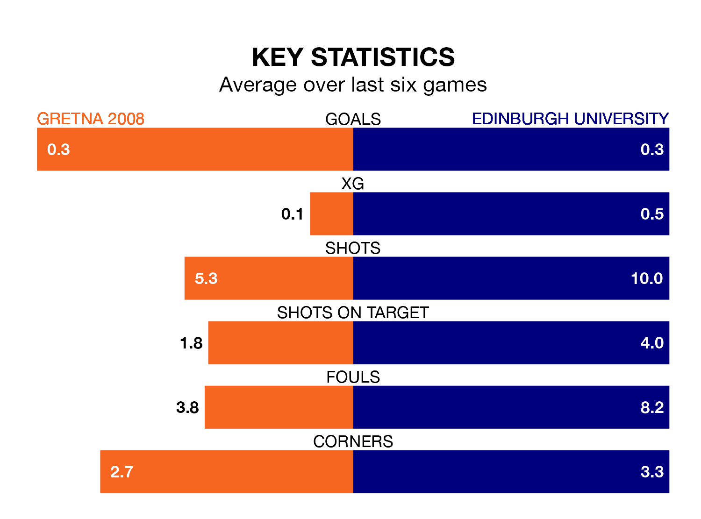

Saturday's match at Raydale Park sees the league's two bottom sides face each other, as Gretna 2008 host rock-bottom Edinburgh University.
Gretna 2008 have picked up eight points from their first eight Lowland Football League games, with one win and five draws.
That is one point more than Edinburgh University have collected, having won two and drawn one.
Gretna 2008 are in terrible form in the Lowland Football League, with no wins and a draw from their last six games.
With a win and five losses over that period, Edinburgh University's form is slightly better – they have taken three points from 18, compared to the home team's one.
In the last 10 years, Gretna 2008 and Edinburgh University have played each other on 17 occasions. Gretna 2008 won six of them, Edinburgh University eight, and they drew three times.
On average, Gretna 2008 scored 1.5 goals and Edinburgh University 1.8 in those matches.
Their last meeting was on October 21, when Edinburgh University won 3-2 at home.
With 16 goals in 33 games so far this season, the visitors are the league's lowest scorers with 0.5 goals per game. And they are conceding more than average, letting in 127 goals at a rate of 3.8 per game.
Gretna 2008 are also below average scorers, with 0.6 goals per game, compared to a league average of 1.7. They have conceded 3.2 goals per game.
Gretna 2008's last match was on Tuesday, a 1-0 loss against Civil Service Strollers.
Edinburgh University lost 4-0 against Cumbernauld Colts last time out, on April 13.
Updated: 15:40 (UTC), 18/04/24